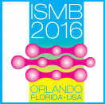
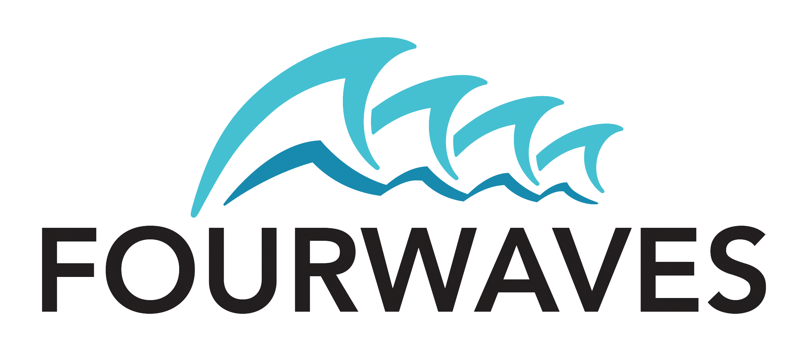

Network Biology Community - ISMB 2016 - Orlando, Florida

Conference site
The NetBio community meeting is held in conjunction with ISMB, the
largest computational biology/bioinformatics conference in the world. The NetBio SIG
will focus on two major areas: (1) the development of network-related
tools and resources, and (2) the application of network analysis and
visualization in the study of biology and
medicine. The meeting will provide a unique interface between tool
developers and users in the field of network biology. Through these
complementary lenses, the SIG will bring into focus the current state
of the field, its future promise and how to get from here to there.
How to Participate
Find the latest information including how to submit an abstract for the annual meeting on this page. In addition to the annual meeting, the NetBio group functions year-round as an international virtual community supporting and co-organizing multiple meetings, connecting researchers, results, and resources, pointing to training opportunities and the latest published research. Find out more via the NetBio Group at LinkedIn.
Important Dates
- February 22: Open call for abstract submissions
- April 29: Submission deadline
- May 6: Notification of accepted abstracts
- June 3: Early registration discount cut-off date
- Friday, July 8: NetBio SIG
- July 10-12: ISMB 2016, Main program
Submission Guidelines
- Length: Up to 5000 characters max (~1 page), plus figure
- Topic: During submission you will select a topic area for your
abstract: Tools & Resources or Applied Research
- Presentation: Also indicate whether you would prefer to
present ONLY a poster. We will accommodate as many talks as
possible, but we may invite you to present a poster even if you'd prefer a talk.
- Submission: The link below will take you to the submission system.
The submission system is sponsored by FourWaves, a platform for organizing academic and research events.

SIG Program
Keynote Speakers
- Lars Juhl Jensen
- Gene Association Networks: Large-scale Integration of Data and Text - University of Copenhagen, Denmark
- Olga Troyanskaya
- Gene Function and Regulation in Biological Networks - Princeton University, NJ, USA
- Franca Fraternali
- Molecular Determinants of Protein-Protein Interactions - King's College London, UK
- Nataša Pržulj
- Patient-Specific Network Data Fusion for Stratification, Biomarker Discovery and Personalized Treatment - University College London, UK
Schedule and Abstracts
Past Presentations
Organizing Committee
- Alexander Pico, Gladstone Institutes, UCSF, profile
- Scooter Morris, RBVI, University of California at San
Francisco, profile
- Gary Bader, University of Toronto, profile
- Mario Albrecht, Graz University of Technology, Austria, profile
- Natasa Przulj, University College London, profile
- Esti Yeger-Lotem, Ben-Gurion University of the Negev, profile
- Frank Kramer, University Medical Center Gottingen, profile
- Martina Kutmon, University of Maastricht, profile
- Gerald Quon, University of California, Davis, profile